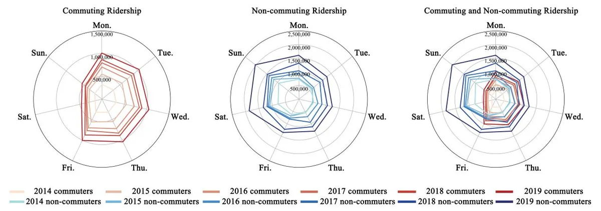

01 / AI APPLICATION
Wriothesley桌面助手
独立完成桌面应用、AI任务指令与云同步，串联对话、任务管理和截图识别。
了解技术实现 ↗PROFILE / 个人概览
曾在Construct、华为、美团等公司实习，实践覆盖产品设计、运营与数据分析。通过独立开发AI应用和团队效率工具，将需求转化为可用的产品。
Featured Work
01 / AI APPLICATION
独立完成桌面应用、AI任务指令与云同步，串联对话、任务管理和截图识别。
了解技术实现 ↗
02 / PRODUCT TOOL
面向产品与运营团队独立开发，打通素材编辑与导出流程，制作效率提升2—5倍。
了解产品实践 ↗
03 / DATA RESEARCH
处理千万级出行数据，结合用户画像与空间分析，探索不同群体的出行规律。
了解研究方法 ↗Explore